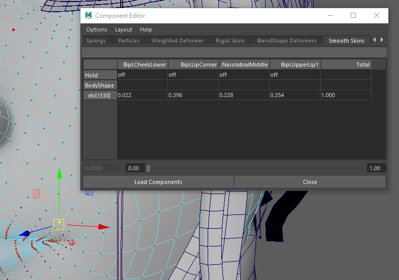
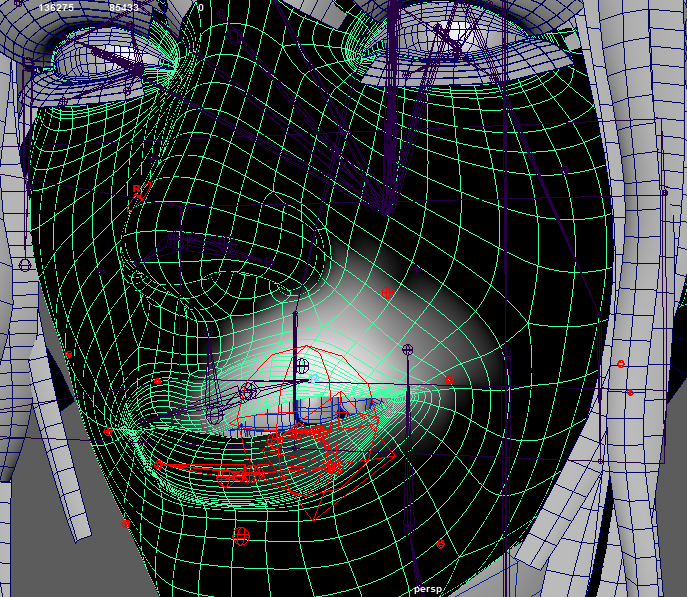

Skinning
The maximum limit of influences per vertex is 4, and then you can start painting influences on your rig.

When working on influences, please test a wide range of expressions—such as head twists and eyes wide open—to observe how the skin respond.
Skinning example: |
 |